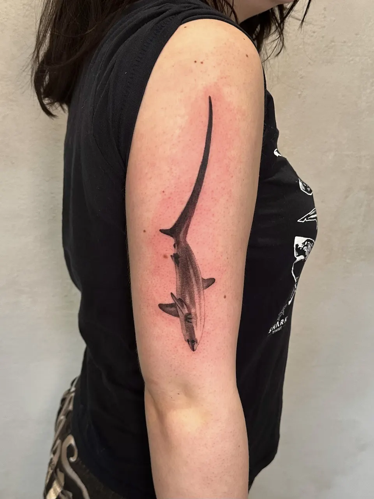
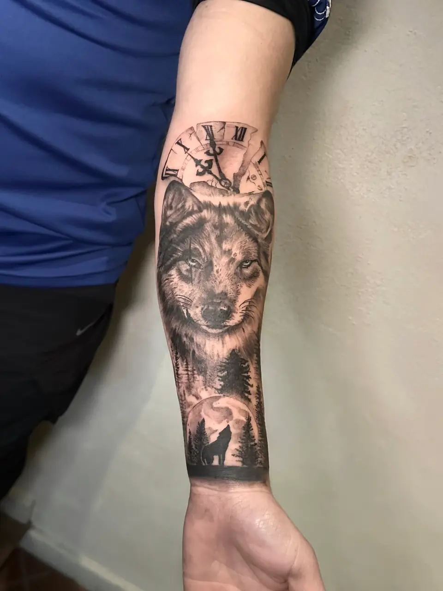
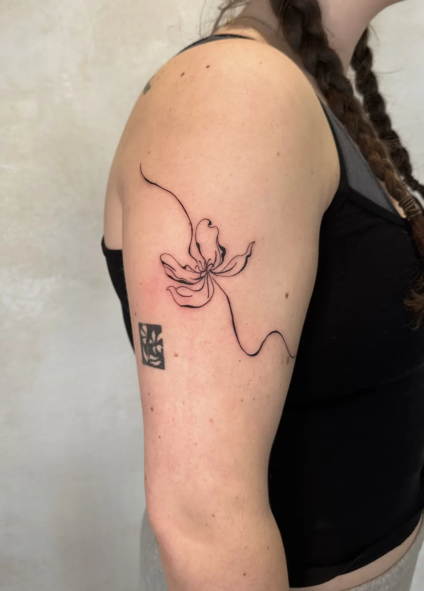
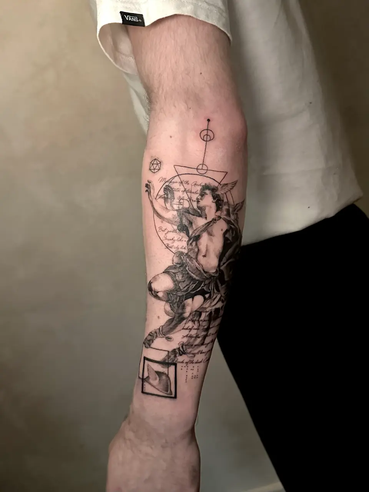
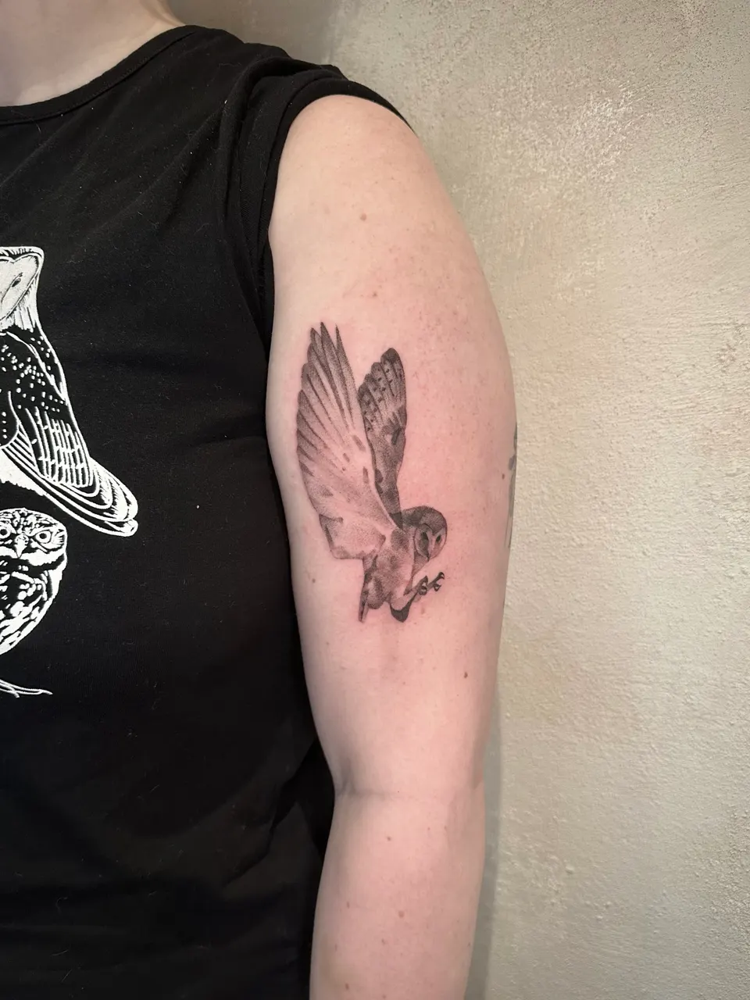
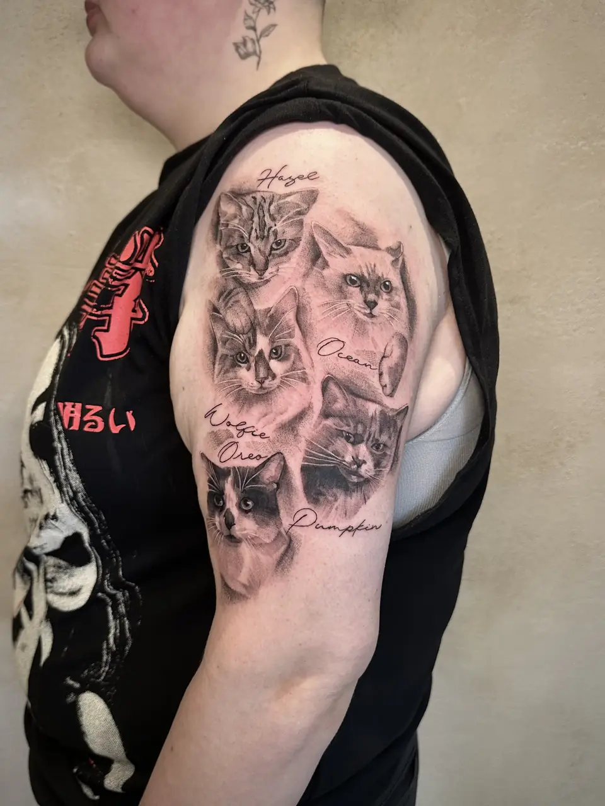
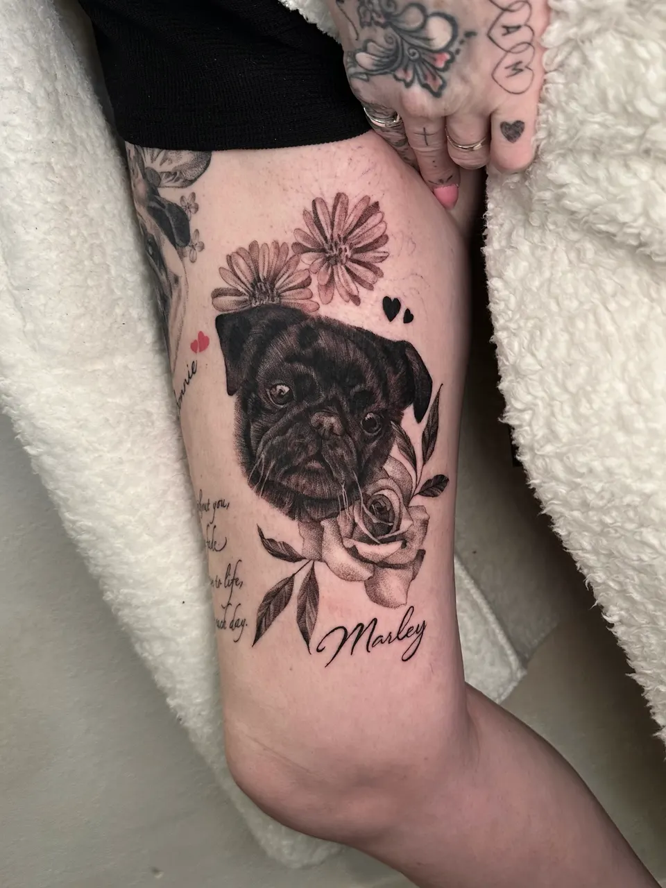
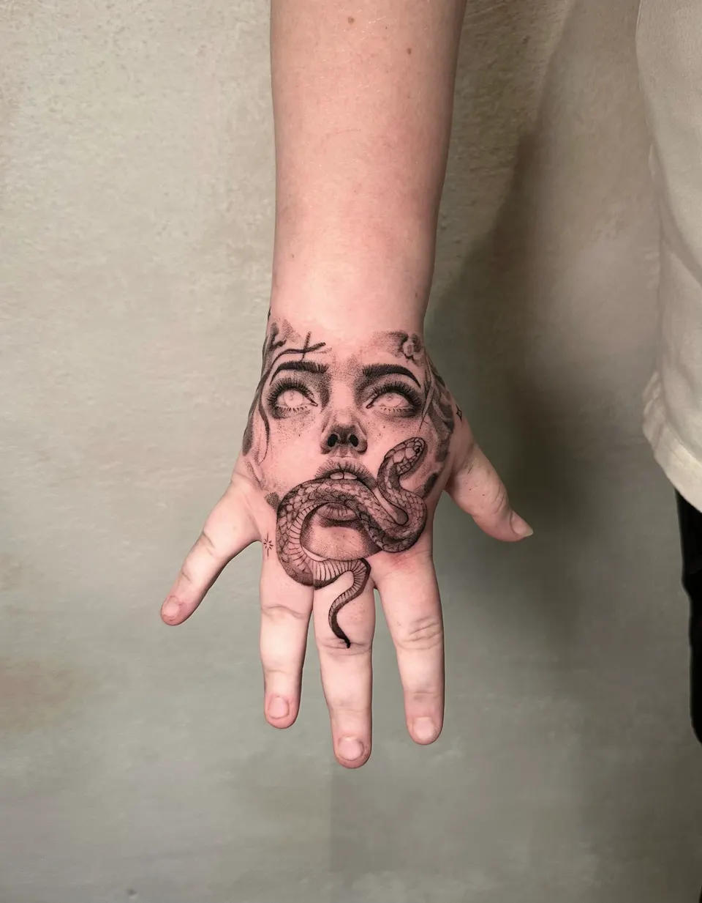
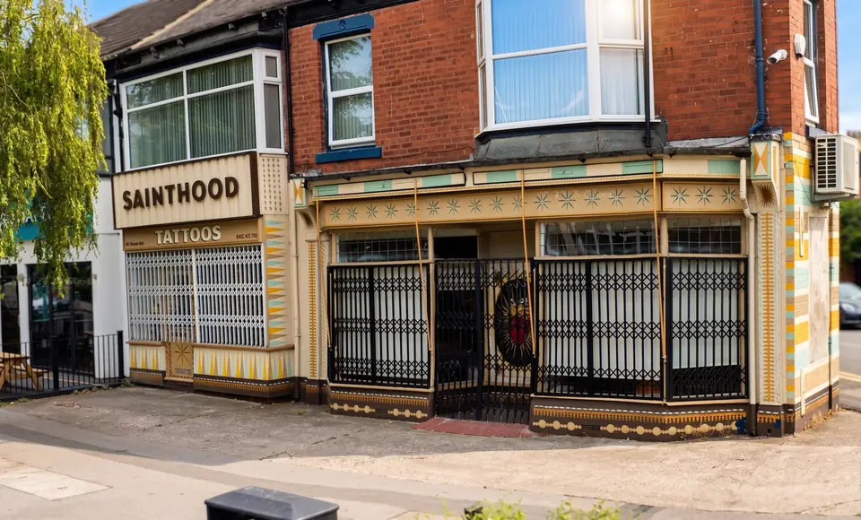

Realism
Fine line · Fine art · Realism








Reviews are genuinely appreciated. They help people find their way here.
A fine line, fine art and realism tattoo artist, working from Sainthood Tattoo on Princes Avenue, Hull.
It is normal to be nervous, regardless of if it's your first tattoo or fifth. I will walk you through every step, you can take your time choosing placement, design, colours, anything you need. I like to say getting a tattoo is teamwork, we work together to make the best tattoo for you.
Start with a message. A reference, a sketch, a feeling, or nothing yet. I draw every design from scratch. Consultation is free.
Consultation is free · Priced by piece, not by hour
Instagram is where new work goes first: finished pieces, available slots, flash designs. Updated when something happens, not on a schedule.
